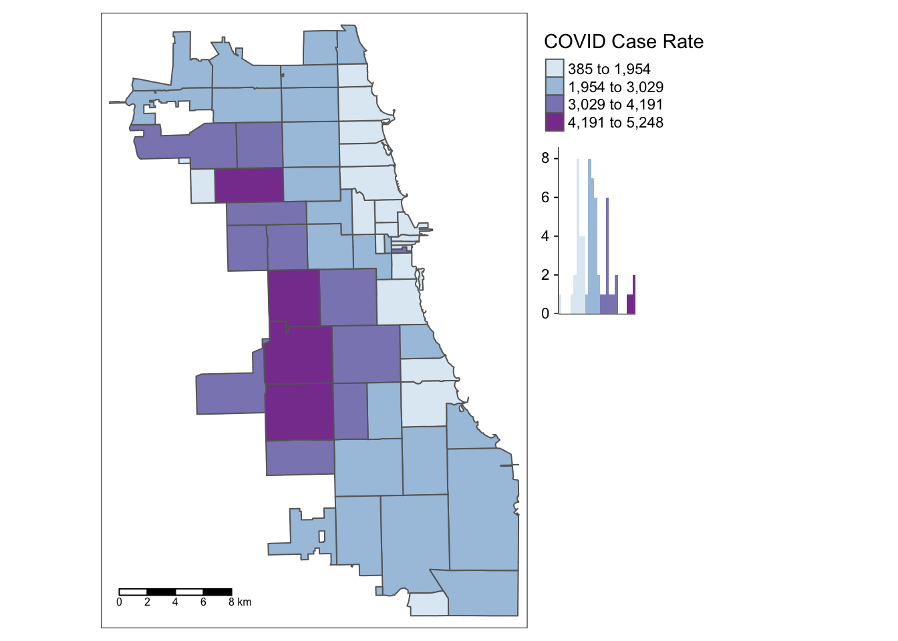
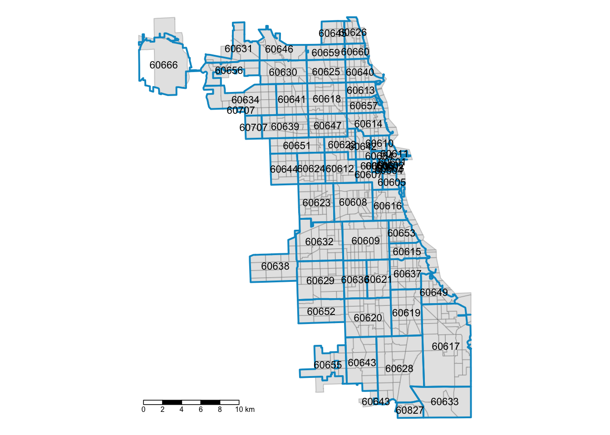

3 Spatial Cluster Detection
Exploratory Spatial Data Analysis requires us to review the variable of interest multiple ways, with different methods, to detect patterns and uncover interesting trends. However, our minds are wired to see patterns, whether or not they are (statistically) there.
In this chapter, we’ll test the COVID regional pattern we identified previously for statistically significant spatial clustering (or outlier) behavior. Our null hypothesis is spatial randomness; if the LISA (local indicator of spatial autocorrelation) for an area is high and statistically significant, we’ve identified a “hot spot” spatial cluster. (In other words, that area and it’s neighbors have higher rates of COVID cases, when compared to a spatially random map.) If the area has a low and statistically significant finding, it’s also a spatial cluster, but a cold spot. We can also detect spatial outliers, as discussed in the workshop. How we define neighbors will influence our findings.
3.1 Identify Pattern
Let’s look at the most stable choropleth map from the last exercise. If you took a break, you’ll need to reload your two main libraries, sf and tmap for spatial data wrangling and detection. Try to practice spatial I/O by loading in your merged Zip-Code level dataset.
library(sf)
library(tmap)
Chi_Zipsf <- st_read("ChiZipMaster.shp")## Reading layer `ChiZipMaster' from data source
## `/Users/maryniakolak/Code/Intro2RSpatialMed/ChiZipMaster.shp' using driver `ESRI Shapefile'
## Simple feature collection with 60 features and 31 fields
## Geometry type: POLYGON
## Dimension: XY
## Bounding box: xmin: -87.87596 ymin: 41.64454 xmax: -87.52414 ymax: 42.02304
## Geodetic CRS: WGS84(DD)After inspecting your dataset again, map your variable of interest, Cumulative Covid Case Rate, developed previously.
# head(Chi_Zipsf)
tm_shape(Chi_Zipsf) +
tm_polygons("C_R___C",
style="jenks", pal="BuPu",
legend.hist=T, n=4,
title = "COVID Case Rate", ) +
tm_scale_bar(position = "left") +
tm_layout(legend.outside = TRUE, legend.outside.position = "right")
We found that multuple areas on the West Side of Chicago persistently emerged as having higher case rates for this week of interest in our dataset. Is this a statistically significant finding, though?
3.2 Load rGeoda
https://geodacenter.github.io/rgeoda/
# install.packages("devtool)
# devtools::install_github("geodacenter/rgeoda")
library(rgeoda)3.3 Define W
w.rook <- rook_weights(Chi_Zipsf)
w.queen <- queen_weights(Chi_Zipsf)
w.queen2 <- queen_weights(Chi_Zipsf, order = 2, include_lower_order = TRUE)3.4 Calculate LISA
lisa.rook <- local_moran(w.rook, Chi_Zipsf['C_R___C'])
lisa.queen2 <- local_moran(w.queen2, Chi_Zipsf['C_R___C'])3.5 Map the LISA
lisa_colors.rook <- lisa_colors(lisa.rook)
lisa_labels.rook <- lisa_labels(lisa.rook)
lisa_clusters.rook <- lisa_clusters(lisa.rook)
plot(st_geometry(Chi_Zipsf),
col=sapply(lisa_clusters.rook, function(x){return(lisa_colors.rook[[x+1]])}),
border = "#333333", lwd=0.2)
title(main = "Local Moran of Covid Case Rt")
legend('bottomleft', legend = lisa_labels.rook, fill = lisa_colors.rook, border = "#eeeeee")
lisa_colors.queen <- lisa_colors(lisa.queen2)
lisa_labels.queen <- lisa_labels(lisa.queen2)
lisa_clusters.queen <- lisa_clusters(lisa.queen2)
plot(st_geometry(Chi_Zipsf),
col=sapply(lisa_clusters.queen, function(x){return(lisa_colors.queen[[x+1]])}),
border = "#333333", lwd=0.2)
title(main = "Local Moran Map of Covid Case Rt")
legend('bottomleft', legend = lisa_labels.queen, fill = lisa_colors.queen)